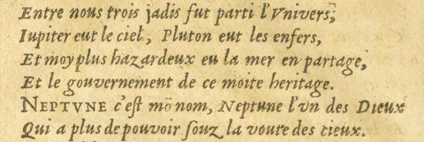
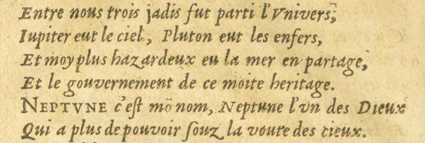
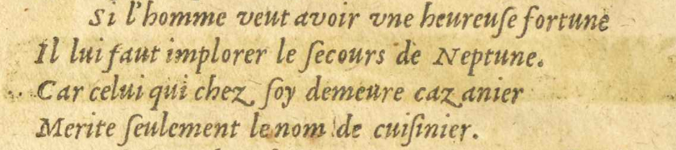
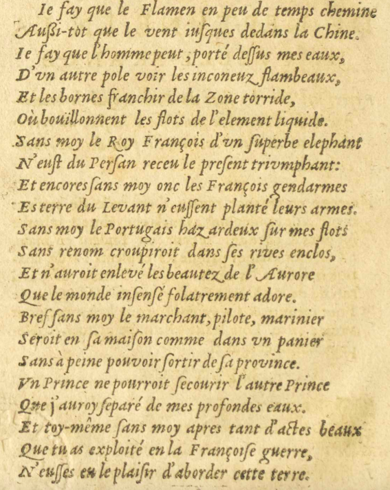

2/11
- Entre nous trois jadis fut parti#1 l'VniversUnivers,E09 : ;
- IupiterJupiter
 Dieu romain qui gouverne la terre et le ciel, ainsi que tous les êtres vivants s'y
trouvant. eut le ciel, Pluton
Dieu romain qui gouverne la terre et le ciel, ainsi que tous les êtres vivants s'y
trouvant. eut le ciel, Pluton Dieu romain des morts. eut les EnfersE09 : enfers
Dieu romain des morts. eut les EnfersE09 : enfers - Et moy plus hazardeux eu la mer en partage,
- Et le gouvernement de ce moite#2 heritage.
- NEPTVNENEPTUNE
 Dieu d'origine latine des eaux vives et des sources, puis des mers. c'eſst monE09 : mõmon nom, NeptuneDieu d'origine latine des eaux vives et des sources, puis des mers. l'vnun des Dieux
Dieu d'origine latine des eaux vives et des sources, puis des mers. c'eſst monE09 : mõmon nom, NeptuneDieu d'origine latine des eaux vives et des sources, puis des mers. l'vnun des Dieux - Qui a plus de pouvoir ſsouz la voute des cieux.
 
- Si l'homme veut avoir vneune heureuſse fortune
- Il lui faut implorer le ſsecours de NeptuneDieu d'origine latine des eaux vives et des sources, puis des mers..
- Car celui qui chez ſsoy demeure cazanier
- Merite ſseulement le nom de cuiſsinier.
- IeJe fay que le FlamenE11 E12 : Flameng en peu de temps chemine
- Auſssi-tot que le vent iuſquesjusques dedans la Chine.
- IeLe fay que l'homme peut, porté deſsſsus mes eaux,
- D'vnun autre pole voir les inconuzE09 : inconeuz flambeaux,
- Et les bornes franchir de la zone torride
 Zone géographique entre les deux tropiques.,
Zone géographique entre les deux tropiques., - Où bouïllonnent les flots de l'element liquide.
- Sans moy le Roy François d'vnun ſsuperbe elephant
 Allusion à Abul-Abbas, spécimen rare d'éléphant blanc, qui a été offert en cadeau
diplomatique à Charlemagne par le calife abbasside Hâroun ar-Rachîd. [Charle-
Allusion à Abul-Abbas, spécimen rare d'éléphant blanc, qui a été offert en cadeau
diplomatique à Charlemagne par le calife abbasside Hâroun ar-Rachîd. [Charle- - N'euſst du Perſsan receu le preſsent trivmphanttriumphant :
- Et encores ſsans moy onc#3 les François gendarmes
- Es#4 terreterres du Levant
 Région qui désigne l'ensemble des contrées du Proche-Orient et du Moyen-Orient. n'euſsſsent plantéE11 : plantê; E18 : porté leurs armes.
Région qui désigne l'ensemble des contrées du Proche-Orient et du Moyen-Orient. n'euſsſsent plantéE11 : plantê; E18 : porté leurs armes. - Sans moy le Portugais hazardeux ſsur mes flots
- Sans renom croupiroit dans ſses rives enclos,
- Et n'auroit enlevé les beautez de l'Aurore
- Que le monde enſsenſsé folatrement adore.
- Bref ſsans moy le marchant, pilote, marinier
- Seroit en ſsa maiſson comme dans vnun panier
- Sans à-peineE09 : à peine pouvoir ſsortir de ſsa province.
- VnUn Prince ne pourroit ſsecourir l'autre Prince
- Que j'auroy ſseparé de mes profondes eaux.
- Et toy-même ſsans moy apres tant d'actes beaux
- Que tu as exploitéexploités en la Françoise guerre
 Huitième guerre de Religion de 1585 à 1598, où Jean de Pourtrincourt s'est illustré
lors du siège de Paris.,
Huitième guerre de Religion de 1585 à 1598, où Jean de Pourtrincourt s'est illustré
lors du siège de Paris., - N'euſsſses eu le plaiſsir d'aborder cette terre.
magne.]E17 E18 : Charle-
magne.
 Roi des Francs appartenant à la dynastie carolingienne de 768 à 814.
Roi des Francs appartenant à la dynastie carolingienne de 768 à 814.